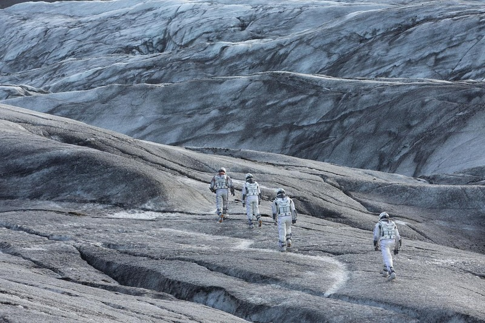
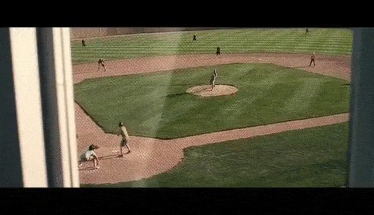

Plot
In the near future around the American Midwest, Cooper, an ex-science engineer and pilot, is tied to his farming land with his daughter Murph and son Tom. As devastating sandstorms ravage Earth's crops, the people of Earth realize their life here is coming to an end as food begins to run out. Eventually stumbling upon a N.A.S.A. base near Cooper's home, he is asked to go on a daring mission with a few other scientists into a wormhole because of Cooper's scientific intellect and ability to pilot aircraft unlike the other crew members.

The crew includes scientists Dr. Amelia Brand (Professor Brand's daughter), Dr. Romilly, Dr. Doyle, and robots TARS and CASE. Before leaving, Cooper gives a distraught Murphy his wristwatch to compare their relative time for when he returns. After traversing the wormhole, Romilly studies the black hole while Cooper, Doyle, and Brand descend in a landing craft to investigate Miller's planet, an ocean world covered in knee-high water. After finding wreckage from Miller's ship, Brand disobeys Cooper’s order to re-board immediately because of her insistence in checking the wreckage, leading to the death of Doyle by a gigantic wave (caused by the gravitational pull of the black hole). The landers’ engines flood and take some time to clear, delaying their departure further. Due to the proximity of the black hole, time is severely dilated: as a result, 23 years have elapsed for Romilly on Endurance by the time Cooper and Brand return.
Edmunds' planet has slightly better telemetry, while Mann broadcasts positive data. Cooper decides to use their remaining fuel to reach Mann's planet, where they revive him from cryostasis. Meanwhile, Murph, now a scientist working with NASA, transmits a message announcing Professor Brand has died. She has learned that Plan A, which required unattainable data from within a black hole, was never viable. Plan B was always Professor Brand's only option. Murphy accuses Brand and Cooper of knowing that those left on Earth were doomed. Cooper subsequently declares that he will be returning to Earth while Brand and Romilly will remain on Mann's planet for permanent habitation as the planet is believed to be habitable. Cooper goes with Mann to explore and inspect the planet. Mann reveals to Cooper that the frozen planet is uninhabitable as he had sent falsified data in order to be rescued; Mann attempts to kill Cooper so that he can take the Endurance to "complete the mission" by going to Edmunds' planet. He then takes a lander and heads for Endurance. Meanwhile, Romilly is killed by a booby trap left by Mann. Brand and Cooper race to the Endurance in another lander. Mann dies during a failed manual docking operation, severely damaging Endurance. After a difficult docking manoeuver, Cooper regains control of the damaged but functional Endurance.
With insufficient fuel to reach Edmunds' planet, they use a slingshot maneuver so close to Gargantua that time dilation adds another 51 years. In the process, Cooper and TARS jettison themselves to shed weight and propel Endurance using Newton's third law to ensure Endurance reaches Edmunds' planet. Slipping through the event horizon of Gargantua, they eject from their respective craft and find themselves inside a massive tesseract, constructed by future humans inside the singularity. Across different time periods, Cooper can see through the bookcases of Murphy's old room on Earth and weakly interact with its gravity. Cooper realizes he was Murphy's "ghost".
Driven by regret of having missed being there for his children and motivated by love that 'transcends the dimensions of space and time, Cooper manipulates the second hand of the wristwatch he gave Murphy, using Morse code to transmit the quantum data that TARS collected from inside the event horizon. Back on Earth and further back in time, Murphy finally realizes it was her father from the future trying to communicate with her and assisted by the aberrant ticking of the seconds hand in her watch, deciphers the Morse code. Cooper and TARS are ejected from the tesseract. Cooper is picked up and awakens on a space habitat orbiting Saturn, where he reunites with an elderly Murphy. Using the quantum data sent by Cooper, the younger Murphy had solved the gravitational propulsion theory for Plan A, enabling humanity's mass exodus and survival. Nearing death and with her own family, Murphy urges Cooper to return to Amelia Brand, telling him that "no parent should have to watch their own child die". Cooper and TARS take a spacecraft to rejoin Amelia and CASE on Edmunds' habitable planet.
